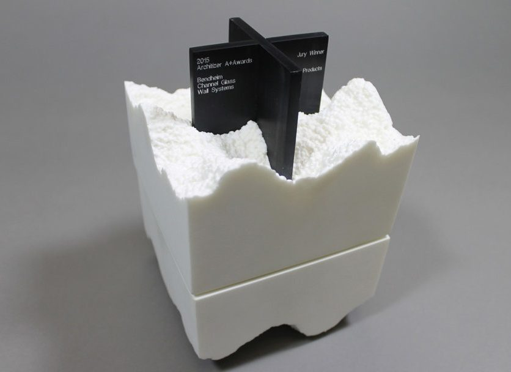
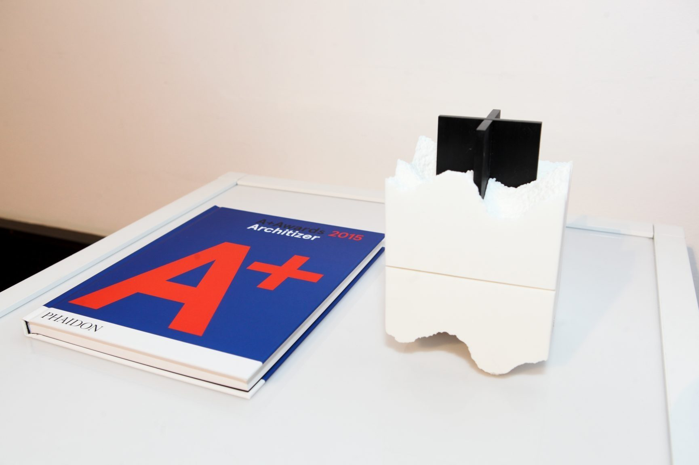
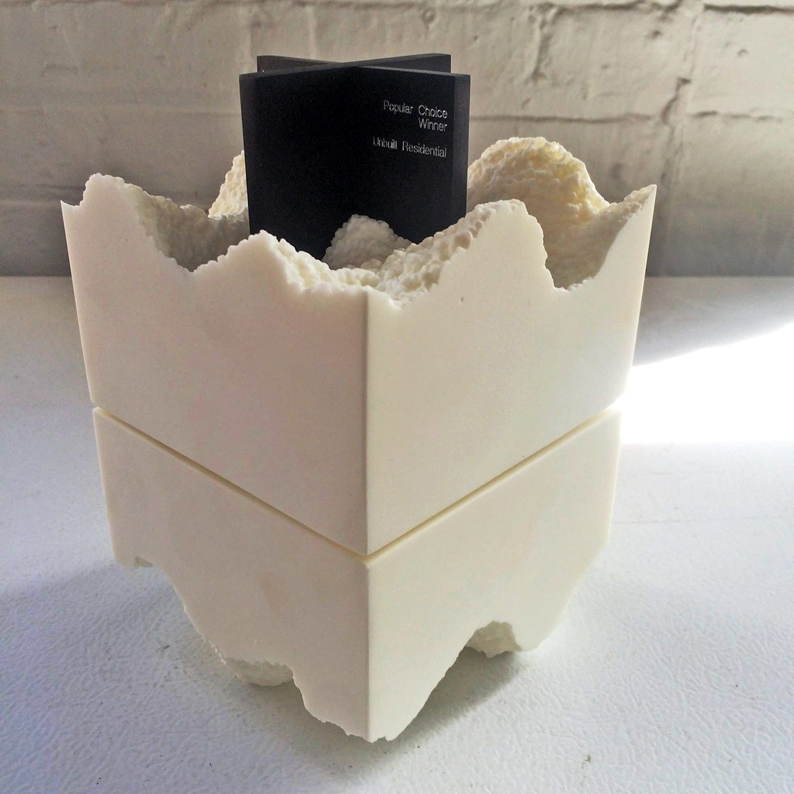
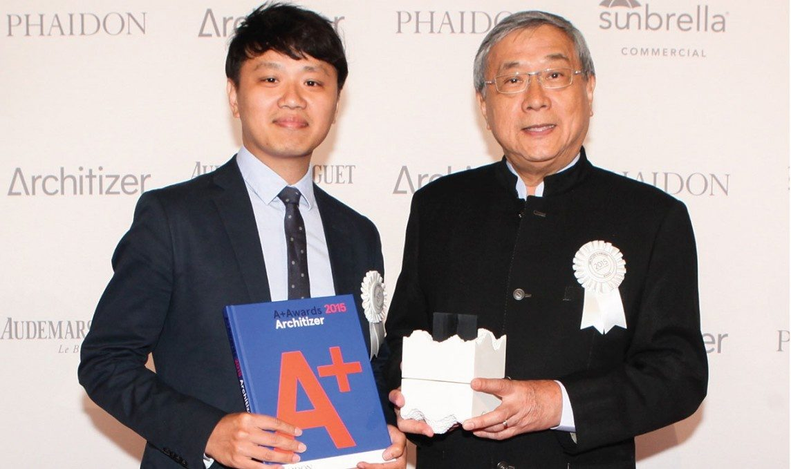
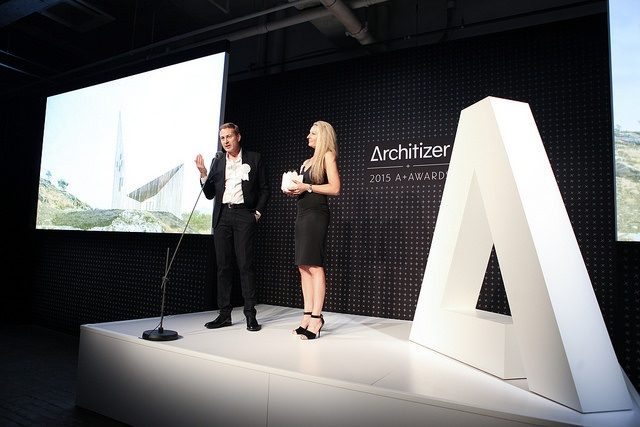
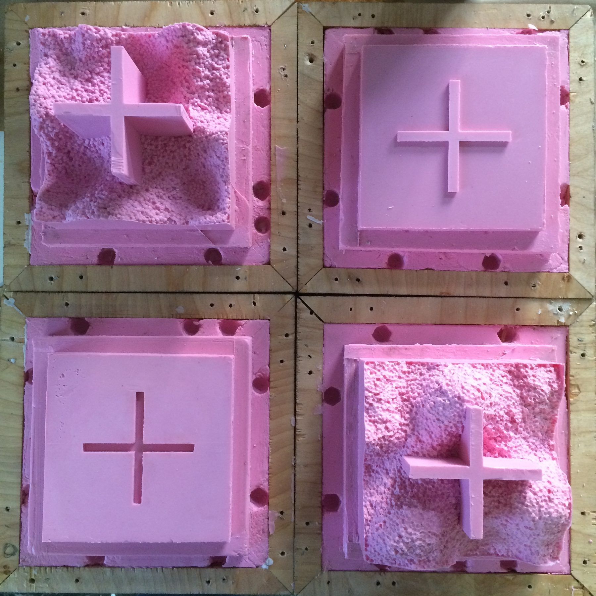
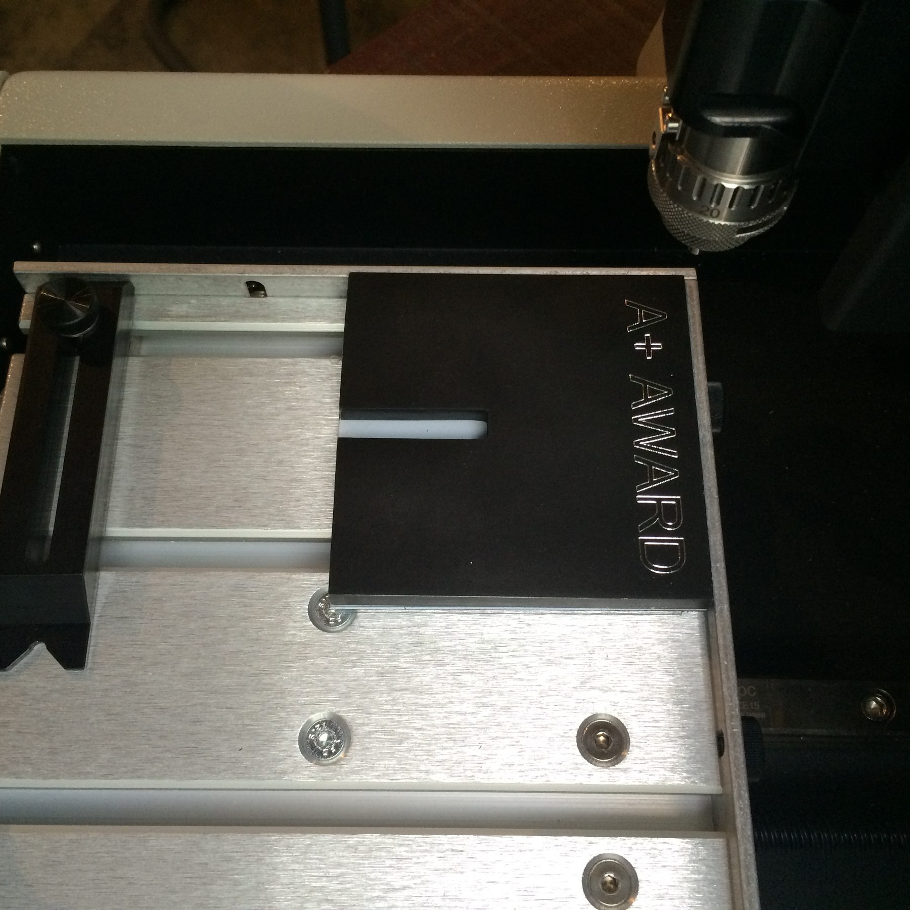
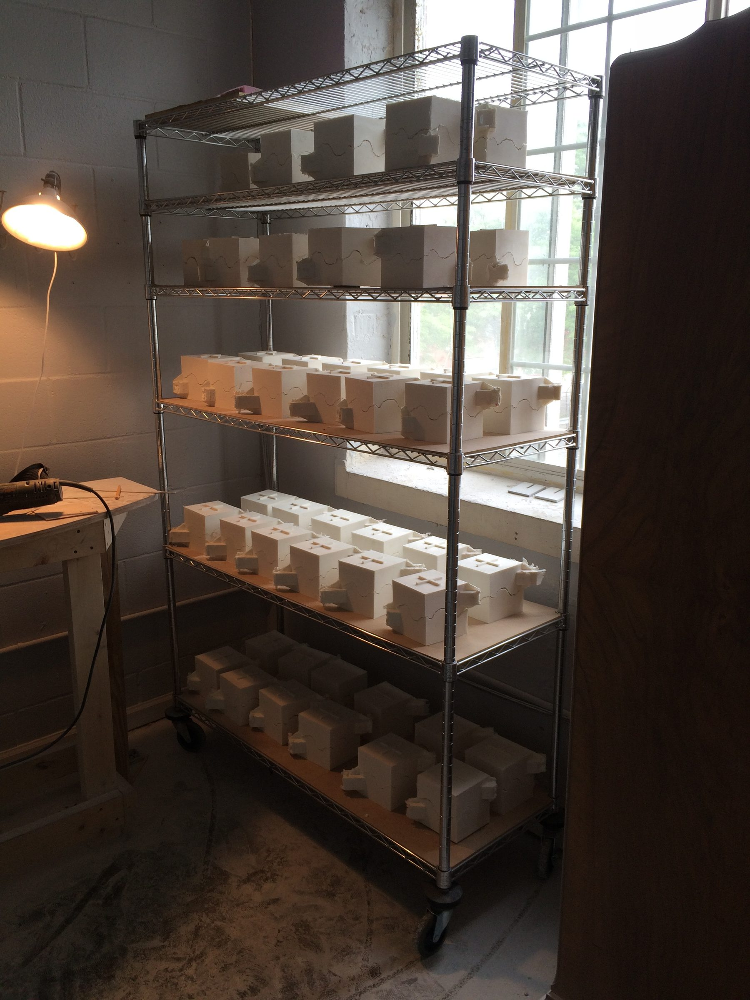
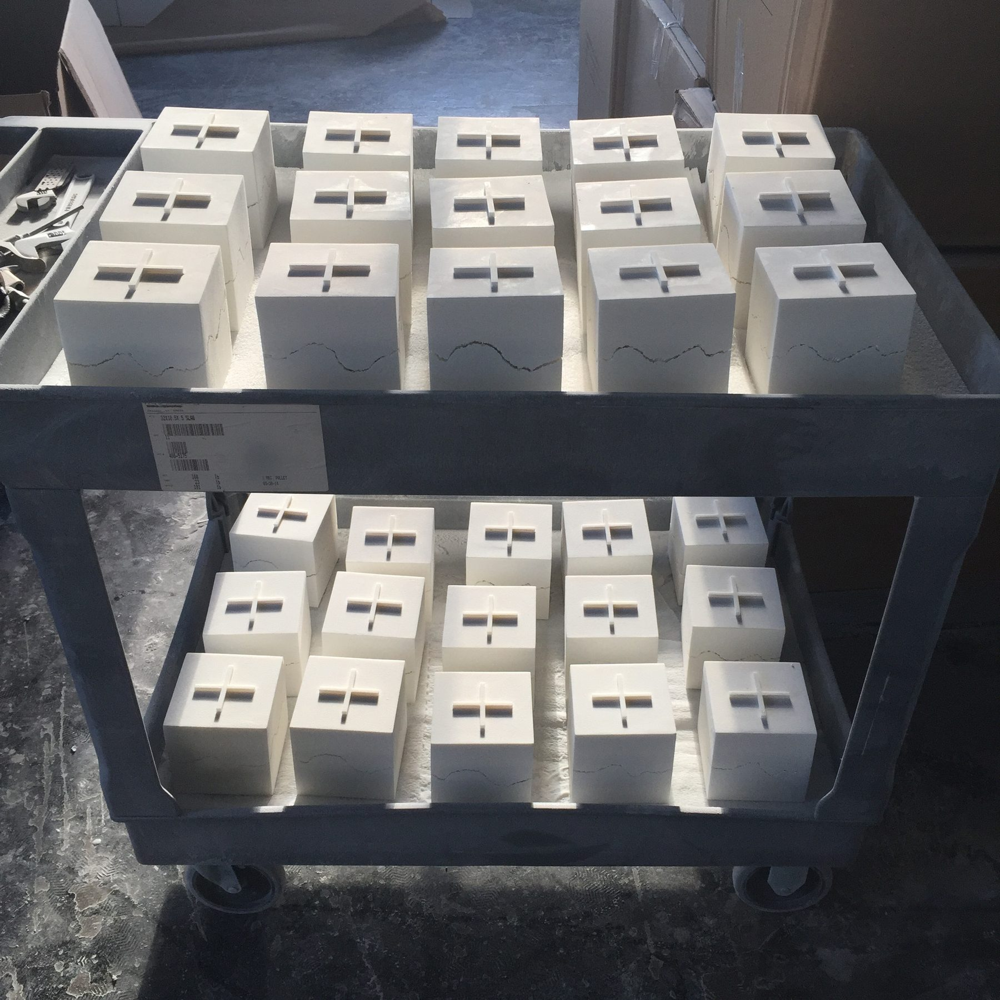
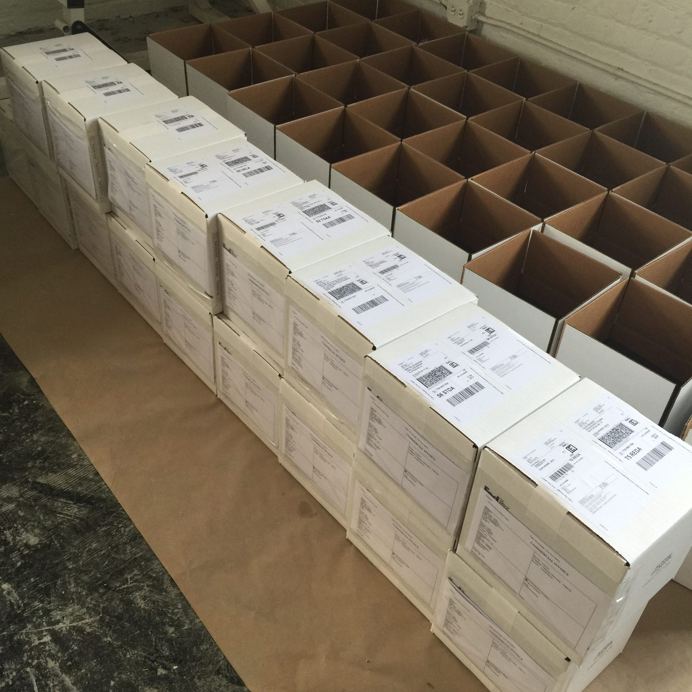

Objects / 2015
Architizer A+ Award
Award objects with Snarkitecture
Award objects for the Architizer A+ Awards, developed with Snarkitecture and produced in series.
The Architizer A+ Awards trophy, designed by Snarkitecture as a cast block with a torn upper edge and a cross shaped plaque set into the top. The objects were developed with Snarkitecture and produced in series for the 2015 and 2016 programs.
The job was a tooling and process problem more than a sculpting one: silicone molds that could survive a long production run, a casting mix that held the broken edge cleanly, and the plaques, packing, and labelling for awards shipping to winners worldwide.
Details
- Year
2015 - Location
Chicago, IL - Category
Objects - Materials
Cultured marble, anodized aluminum
Credits
- Design: Snarkitecture
- Produced for Architizer
- Development and production: Ben Stagl
Index









